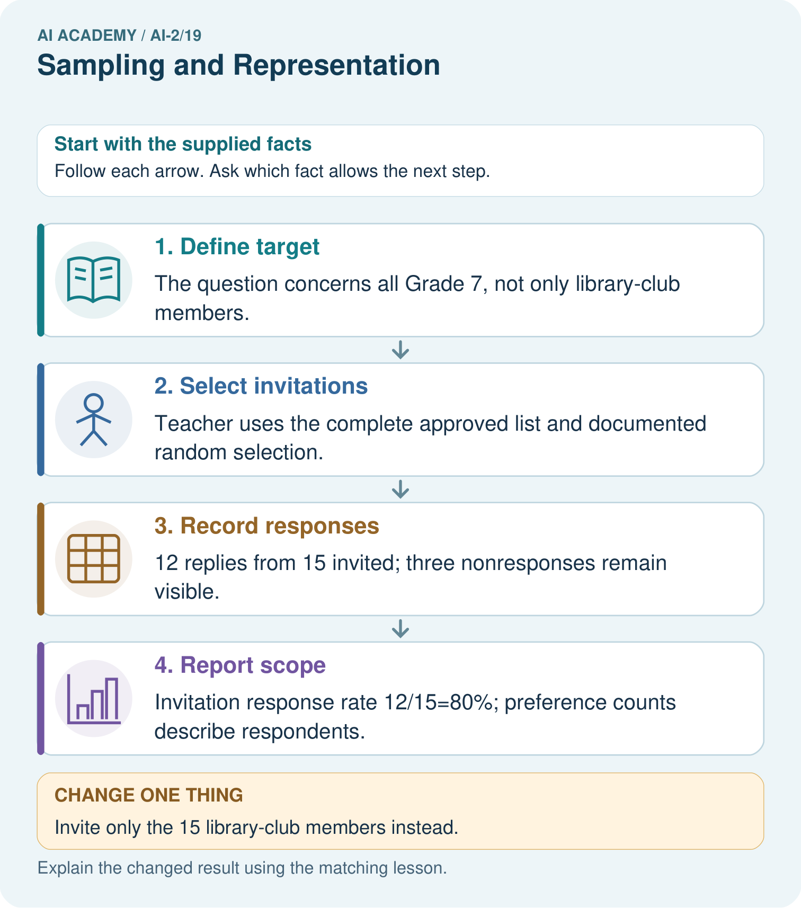
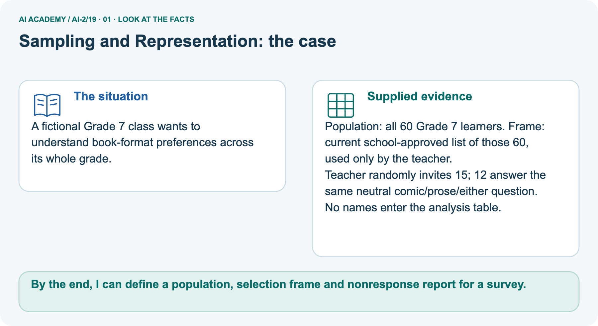
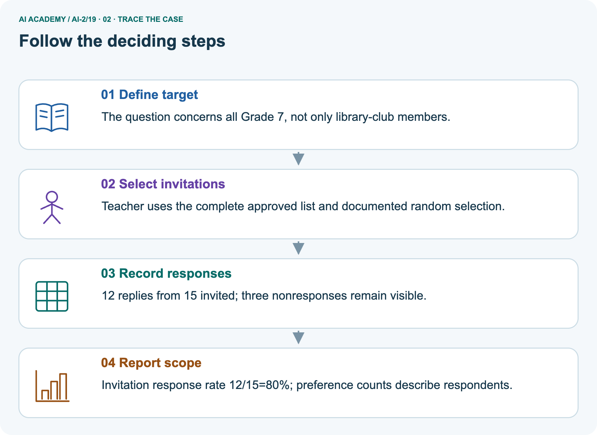
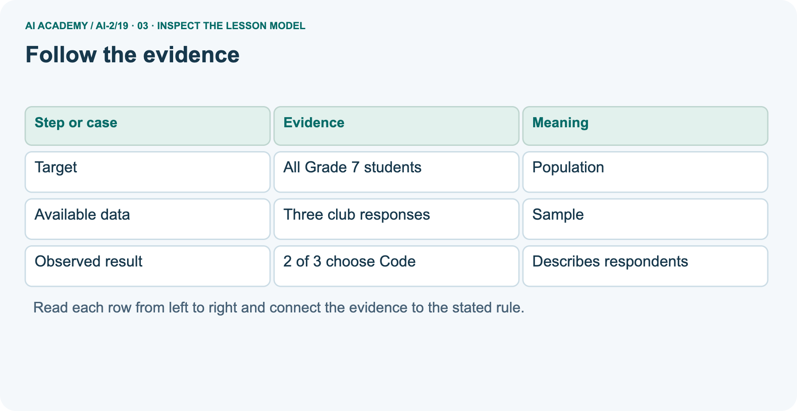
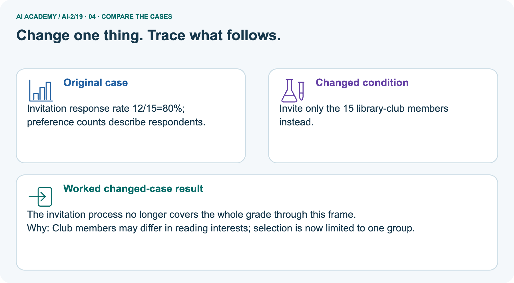
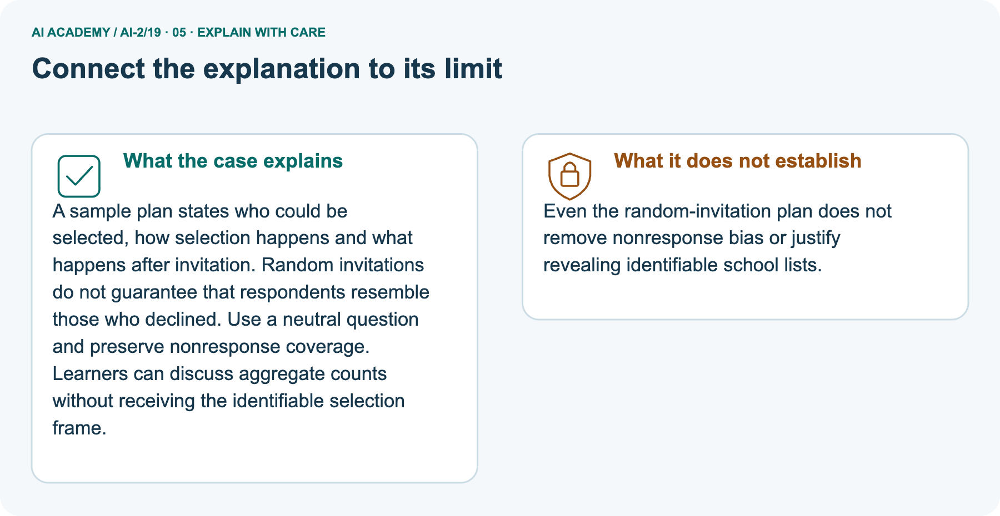
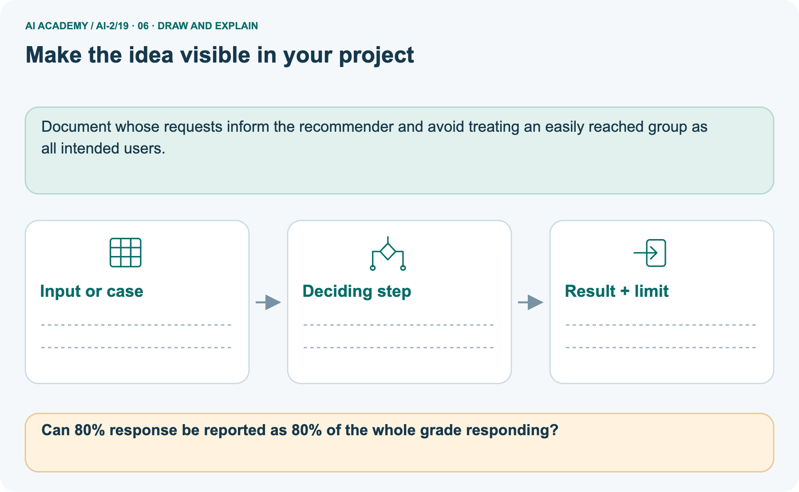

AI Academy · Level 2 · Grade 7 · Week 19 · Workbook
Sampling and Representation
Learn to understand, design, build, test and explain AI systems responsibly.
Project: Transparent Book Recommender
THE CONNECTED WEEK
One connected survey-plan record, with a graph extension.
Define population, label a result, repair a claim and retain nonresponse before designing a fresh plan.
Keep one habit: Keep question, frame, selection method, invited/responded counts and limits together.
Main lesson · Section 1
Recall · Retrieve earlier ideas
Try before opening notes.
Your evidence record
Try the recall before opening notes. Then use a different colour or a labelled second line to correct your explanation.
Without opening the old lesson, explain one key idea from Missing Data. Give an example and a mistake that the idea helps you avoid.
Without opening the old lesson, explain one key idea from Overfitting Intuition. Give an example and a mistake that the idea helps you avoid.
Without opening the old lesson, explain one key idea from Types of Classification Error. Give an example and a mistake that the idea helps you avoid.
Earlier wording, alternatives and picture transcripts
Missing Data
Overfitting Intuition
Types of Classification Error
Main lesson · Section 12
W1 · Define the target population
Give a sample whose selection cannot support that whole-population claim.
Your evidence record
Main sample reference: population means everyone the question concerns; frame is the source from which invitations are selected; respondents are those who answer. Original club code counts2 Code choices of3 responses. W2 is a separate longer-lunch result7 of12. Pictured format plan uses60 population,15 invited,12 replies; the fraction12/15 is not12/60. No preference result is supplied for that plan.
The question is whether all Grade 7 students prefer a longer lunch. Name the population and one unsuitable sample.
Main lesson · Section 13
W2 · Label the observed lunch proportion
Keep the12-respondent denominator and avoid a whole-grade claim.
Your evidence record
Main sample reference: population means everyone the question concerns; frame is the source from which invitations are selected; respondents are those who answer. Original club code counts2 Code choices of3 responses. W2 is a separate longer-lunch result7 of12. Pictured format plan uses60 population,15 invited,12 replies; the fraction12/15 is not12/60. No preference result is supplied for that plan.
Seven of 12 fictional respondents prefer longer lunch. State the result without generalizing.
Main lesson · Section 14
W3 · Repair a club-only headline
Narrow the claim or propose a changed sampling plan.
Your evidence record
Main sample reference: population means everyone the question concerns; frame is the source from which invitations are selected; respondents are those who answer. Original club code counts2 Code choices of3 responses. W2 is a separate longer-lunch result7 of12. Pictured format plan uses60 population,15 invited,12 replies; the fraction12/15 is not12/60. No preference result is supplied for that plan.
A report says all Grade 7 prefers coding after surveying only the coding club. Rewrite it.
Main lesson · Section 16
W5 · Report nonresponse after fair selection
Fair invitations do not reveal the views of nonrespondents.
Your evidence record
Main sample reference: population means everyone the question concerns; frame is the source from which invitations are selected; respondents are those who answer. Original club code counts2 Code choices of3 responses. W2 is a separate longer-lunch result7 of12. Pictured format plan uses60 population,15 invited,12 replies; the fraction12/15 is not12/60. No preference result is supplied for that plan.
Twenty students are selected fairly but only 8 answer. Does fair selection remove the need to report nonresponse?
Main lesson · Section 4
W4 · Plan independently
Keep the first attempt before hints.
Your evidence record
Use a fictional grade and invented identifiers. Design the sampling/anonymous-response process; no real roster or real survey is required.
Design an anonymous sample plan to ask all Grade 7 about three activity choices. State population, sampling frame, selection method, question, and how you will report nonresponse.
Attempt this case before feedback. Record any help. Earlier examples below are further practice; a case already practised with feedback cannot establish fresh transfer.
Earlier wording, alternatives and picture transcripts
Independent case: Plan independently
Main lesson · Section 9
Project · Keep the decision and evidence
Extend the existing project record.
Your evidence record
Test reader profiles across reading levels, genres, ages, formats, and accessibility needs.
The project change and evidence I will keep
Main lesson · Section 22
Feedback · Repair and return
Keep first attempt, repair and a changed-case check.
Your evidence record
Revisit this idea with your teacher after a delay. Familiarity is different from explaining and using it on a changed case.
| Evidence | My record |
|---|---|
| Worked alone / hint / model | |
| First step I repaired and why | |
| New case checked later; date and result | |
| What I can now explain without notes | |
| One remaining question |
Main lesson · Section 10
Finish · Judge your evidence
Point to work that supports your judgement.
Your evidence record
- I can explain the mechanism.
- I can show evidence.
- I can handle a changed case.
- I can name a limit.
Mark each as not yet, with help or independently, and attach supporting work.
Teacher review ____________________ Next step ____________________
Reference bank and extra practice
Choose the reference that helps your next step.
Reference · Supported W2 record
Reference · Section 2
Reference · Supported W2 record
Use when helpful; keep this practice separate from the selected first attempt.
Additional evidence
Use W2: Read the sample result for Questions populations and samples. Record the answer once; the lesson and workbook refer to the same attempt.
| Given inputs | Procedure I chose | Middle steps | Result and check |
|---|---|---|---|
Extra practice · Repair a claim
Reference · Section 3
Extra practice · Repair a claim
Use when helpful; keep this practice separate from the selected first attempt.
Additional evidence
Use the worked case for Questions populations and samples. Proposed explanation: “A successful run proves the conclusion”. Decide whether this explanation is supported.
Point to the step or supplied fact that decides; explain your repair if needed.
Reference · Earlier target
Reference · Section 5
Reference · Earlier target
Use when helpful; keep this practice separate from the selected first attempt.
Additional evidence
A survey about school reading preferences includes only volunteers from a mystery club. Explain why 100 responses may still fail to represent the school. Propose a better sampling plan using fictional data.
Extra practice · Earlier worked case
Reference · Section 6
Extra practice · Earlier worked case
Use when helpful; keep this practice separate from the selected first attempt.
Additional evidence
Only adventure-club members answer a school reading survey.
Explain the sampling problem.
Show your trace, calculation or evidence
Extra practice · Changed case
Reference · Section 7
Extra practice · Changed case
Use when helpful; keep this practice separate from the selected first attempt.
Additional evidence
You survey only the chess club about all students' favourite books. Identify the sampling limitation and one improvement.
My practice reasoning
Week 19 Test and reflect
Extra practice · A revealing test
Reference · Section 8
Extra practice · A revealing test
Use when helpful; keep this practice separate from the selected first attempt.
Additional evidence
Create a changed input, boundary case or missing-information case. Write the expected answer or safe response before testing.
| Test record | My evidence |
|---|---|
| Changed input or condition | |
| Expected answer or fallback | |
| Observed result | |
| Why the result occurred |
Extra practice · Earlier transfer
Reference · Section 11
Extra practice · Earlier transfer
Use when helpful; keep this practice separate from the selected first attempt.
Additional evidence
A survey about school reading preferences includes only volunteers from a mystery club. Explain why 100 responses may still fail to represent the school. Propose a better sampling plan using fictional data.
Record support used: none, hint or teacher explanation.
Reference · Selected W4 response copy
Reference · Section 15
Reference · Selected W4 response copy
Use when helpful; keep this practice separate from the selected first attempt.
Additional evidence
Design an anonymous sample plan to ask all Grade 7 about three activity choices. State population, sampling frame, selection method, question, and how you will report nonresponse.
Extension · Graphs and honest scales — W1 Read the scale
Reference · Section 17
Extension · Graphs and honest scales — W1 Read the scale
Retained extension task with its own teacher key and response.
Extension question and record
A bar is 6 squares long with 2 votes per square. How many votes is that?
Extension · Graphs and honest scales — W2 Compare fairly
Reference · Section 18
Extension · Graphs and honest scales — W2 Compare fairly
Retained extension task with its own teacher key and response.
Extension question and record
Counts are 12 and 15. State the difference and ratio using the true values.
Extension · Graphs and honest scales — W3 Repair a misleading graph
Reference · Section 19
Extension · Graphs and honest scales — W3 Repair a misleading graph
Retained extension task with its own teacher key and response.
Extension question and record
Bars for 12 and 15 start at 10. Explain the misleading lengths and repair.
Extension · Graphs and honest scales — W4 Draw independently
Reference · Section 20
Extension · Graphs and honest scales — W4 Draw independently
Retained extension task with its own teacher key and response.
Extension question and record
Draw a bar chart for Music 6, Art 9, Coding 3. Include title, category labels, vote units, zero baseline and equal scale. State two supported comparisons.
Extension · Graphs and honest scales — W5 Limit the claim
Reference · Section 21
Extension · Graphs and honest scales — W5 Limit the claim
Retained extension task with its own teacher key and response.
Extension question and record
Art has the most votes among 18 responses. Does that establish Art is best for learning?
Extra practice · Pictured case
Reference · Section 23
Extra practice · Pictured case
Use when helpful; keep this practice separate from the selected first attempt.
Additional evidence
A fictional Grade 7 class wants to understand book-format preferences across its whole grade.
Population: all 60 Grade 7 learners. Frame: current school-approved list of those 60, used only by the teacher.
Teacher randomly invites 15; 12 answer the same neutral comic/prose/either question. No names enter the analysis table.



Can 80% response be reported as 80% of the whole grade responding?
Support used: alone / hint / worked example. This record is practice evidence.
Project connection: Document whose requests inform the recommender and avoid treating an easily reached group as all intended users.
Reference · Project milestone
Reference · Section 24
Reference · Project milestone
Use when helpful; keep this practice separate from the selected first attempt.
Additional evidence
Project: Transparent Book Recommender
Current milestone: Evaluate and revise. Compare with your starting method, explain errors and record a justified revision.
Document whose requests inform the recommender and avoid treating an easily reached group as all intended users.
| Evidence to keep | My record |
|---|---|
| This week’s input and deciding step | |
| Prediction and actual result (or labelled paper trace) | |
| One change since the previous checkpoint and why | |
| One error or limit and the next test |
Extra practice · Pictures, feedback and repair
Reference · Section 25
Extra practice · Pictures, feedback and repair
Try before opening feedback; keep the selected independent task separate.
First supported question
A fictional Grade 7 class wants to understand book-format preferences across its whole grade.
Which labelled step matches this detail? Invitation response rate 12/15=80%; preference counts describe respondents.
1. Define target
2. Report scope
3. Record responses
4. Select invitations
Hint if needed: Read the steps in the pictorial case. Match the supplied detail to the stage that performs or records it.
Practice 1: explain the deciding evidence
Check after trying
After your attempt, compare with the supported explanation: Report scope Invitation response rate 12/15=80%; preference counts describe respondents.
A sample plan states who could be selected, how selection happens and what happens after invitation. Random invitations do not guarantee that respondents resemble those who declined.
Use a neutral question and preserve nonresponse coverage. Learners can discuss aggregate counts without receiving the identifiable selection frame.
Changed-case question
Changed-case practice: Invite only the 15 library-club members instead. Which conclusion is supported by the supplied facts?
1. This one example guarantees correct results for every future input.
2. The invitation process no longer covers the whole grade through this frame.
3. We can decide the result without examining the changed input or the procedure.
Hint if needed: Use the changed condition and the deciding step in the pictorial trace. The answer must say what follows from those facts.
Practice 2: explain the deciding evidence
Check changed case
After your attempt, compare with the supported explanation: The invitation process no longer covers the whole grade through this frame. Club members may differ in reading interests; selection is now limited to one group.
Repair and keep evidence
Review Missing Data (ai-2/18). Goal: Detect absent and unusable values. Short practice: Why is the Boolean True rejected even though arithmetic can treat it like 1 in Python?. Return to this week and explain what you changed.
Review Overfitting Intuition (ai-2/16). Goal: Compare training and validation evidence for model capacity. Short practice: Does zero training error justify choosing Complex in the original record?.
Return to this week and explain what you changed.
Review Types of Classification Error (ai-2/13). Goal: Build a labelled confusion matrix from matched reference and prediction pairs. Short practice: Which error causes a sound book to be sent for unnecessary repair review?.
Return to this week and explain what you changed.
The browser lab lets you edit the supported Python examples already included in this lesson. Predict first, run, inspect the actual output or error, change one input, then run again.
Keep code, predictions, actual results and a reasoned revision together. On paper, label your result as a trace rather than an execution.
Use Download completed work in the hosted lesson to export your answers, reflections, practice feedback and code-run evidence. Open the HTML copy to read or print it.
Drafts stay in this browser when storage is available; clear drafts on a shared device.
Earlier wording, alternatives and picture transcripts
Use this supported practice once, in the browser or on paper. Keep the reserved independent assessment for a separate first attempt before teacher feedback.
Repair a missing building block
Predict, run and debug
Keep your completed work
Reference · Six-picture response sheets
Reference · Section 26
Reference · Six-picture response sheets
Choose the relevant picture rather than repeating every task.
01. Sampling and Representation: the case



A fictional Grade 7 class wants to understand book-format preferences across its whole grade. Supplied facts: Population: all 60 Grade 7 learners. Frame: current school-approved list of those 60, used only by the teacher.
Teacher randomly invites 15; 12 answer the same neutral comic/prose/either question. No names enter the analysis table.
Point to the given fact that matters most. Explain why it matters.
02. Follow the deciding steps



Define target: The question concerns all Grade 7, not only library-club members. → Select invitations: Teacher uses the complete approved list and documented random selection. → Record responses: 12 replies from 15 invited; three nonresponses remain visible. → Report scope: Invitation response rate 12/15=80%; preference counts describe respondents.
Point to each numbered stage and explain which recorded input it uses.
03. Follow the evidence



Follow the evidence. Target | All Grade 7 students | Population. Available data | Three club responses | Sample. Observed result | 2 of 3 choose Code | Describes respondents
Read the labels and values. Explain the relationship the model shows.
04. Change one thing. Trace what follows.



Original case: Invitation response rate 12/15=80%; preference counts describe respondents. Changed condition: Invite only the 15 library-club members instead.
Expected result: The invitation process no longer covers the whole grade through this frame. Reason: Club members may differ in reading interests; selection is now limited to one group.
Predict before checking the worked changed-case result. Name what changed and what the supplied facts allow you to conclude.
05. Connect the explanation to its limit



A sample plan states who could be selected, how selection happens and what happens after invitation. Random invitations do not guarantee that respondents resemble those who declined.
Use a neutral question and preserve nonresponse coverage. Learners can discuss aggregate counts without receiving the identifiable selection frame.
Limit: Even the random-invitation plan does not remove nonresponse bias or justify revealing identifiable school lists.
Explain the case, then point to a limit on the claim.
06. Make the idea visible in your project



Document whose requests inform the recommender and avoid treating an easily reached group as all intended users. Draw your input, deciding step, result and limit.
Supported question: Can 80% response be reported as 80% of the whole grade responding?
Draw your project trace and justify the deciding step using evidence.